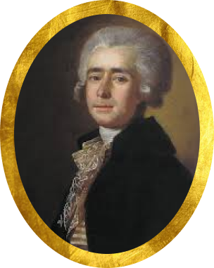

На главную
На главную
Вторая половина XVIII в.
В первой половине XVIII века в России происходило развитие профессиональной музыки. Начиналось освоение таких европейских жанров, как опера, кантата, соната, сюита. В дворянских семьях обязательным становилось музыкальное домашнее образование.
Главные деятели искусство

Бортнянский Дмитрий Степанович